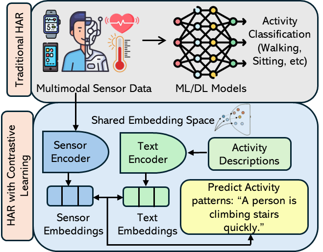
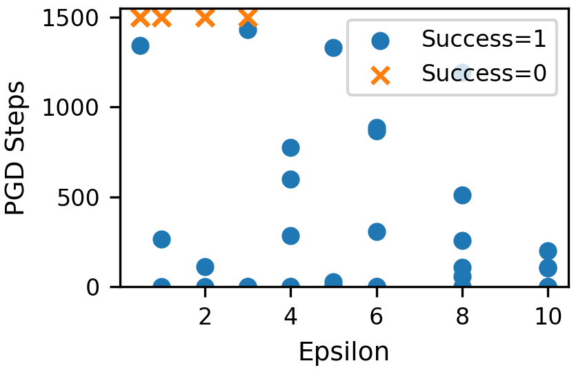
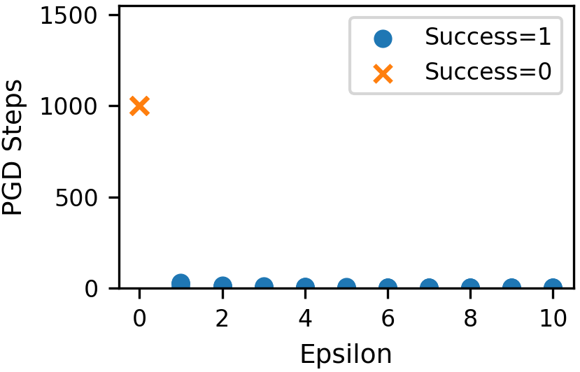
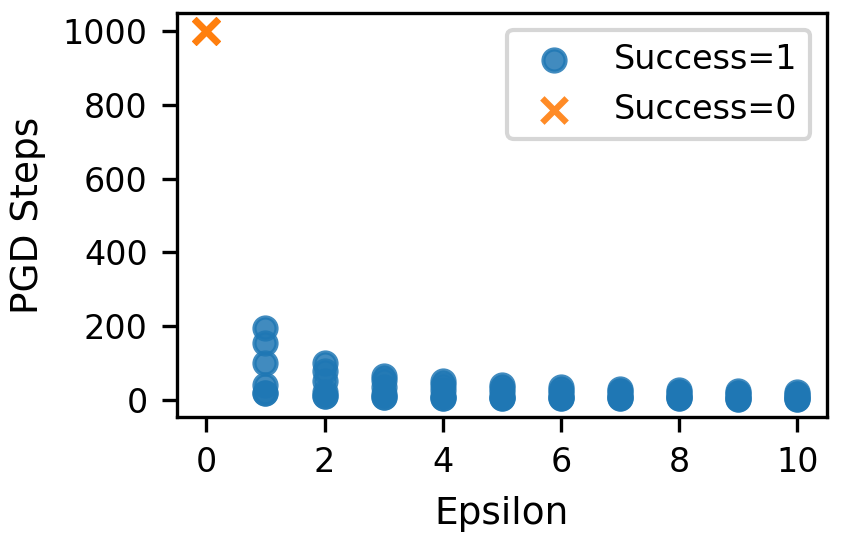
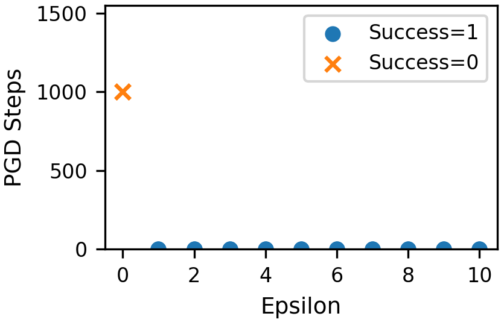
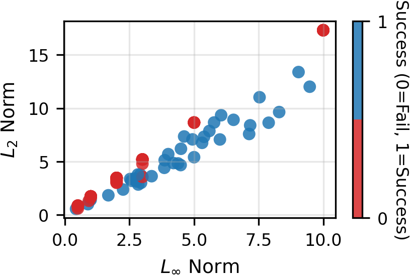
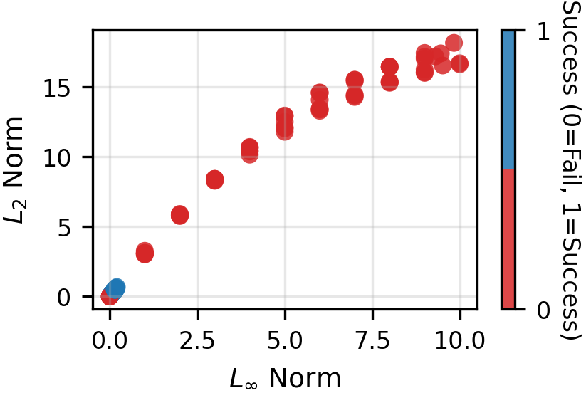
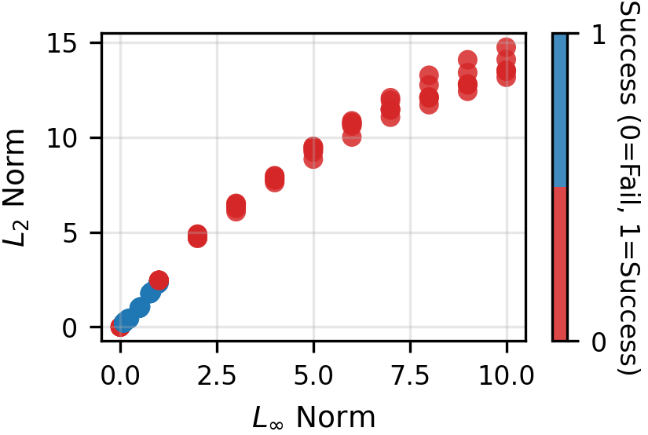
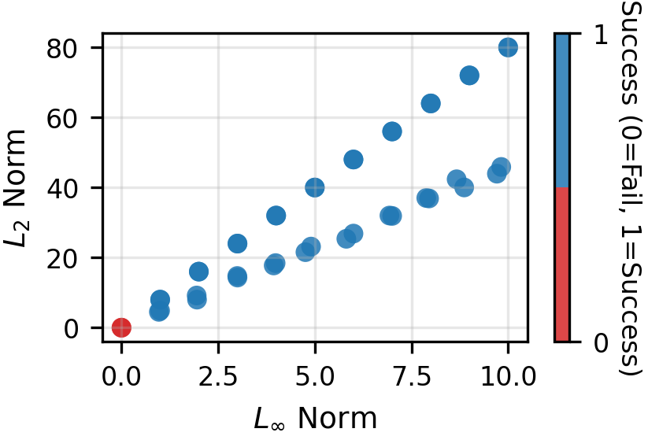

Experimental Results
The graphs summarize the effect of the cross-modal embedding poisoning attack. The PGD-step
plots show how many optimization steps are needed for successful and failed attacks across
perturbation values. The norm plots show the relationship between L∞ and L2 perturbation
magnitudes, where stronger perturbations generally lead to more reliable attack success.

Traditional HAR vs. Contrastive HAR
Traditional HAR directly classifies activities, while contrastive HAR aligns sensor embeddings and text embeddings in a shared space.

Cross-Modal Attack Overview
The attacker injects a bounded perturbation into the text embedding during inference, causing target sensor-text misalignment.

Similarity and Loss Changes
The attack reduces adversarial similarity and increases contrastive loss across datasets and activities.

WISDM: PGD Steps vs Epsilon
WISDM shows activity-level variation. Some activities require larger perturbations for successful misalignment.

MotionSense: PGD Steps vs Epsilon
MotionSense is highly sensitive to small perturbations, with many attacks succeeding at low epsilon values.

HHAR: PGD Steps vs Epsilon
HHAR shows strong attack sensitivity, where successful attacks often require very few PGD steps.

WESAD: PGD Steps vs Epsilon
WESAD stress and non-stress embeddings are highly vulnerable to embedding-level perturbations.

WISDM: Perturbation Norms
The L∞ and L2 norms increase with perturbation strength, showing how attack magnitude relates to success.

MotionSense: Perturbation Norms
MotionSense shows a clear growth pattern between L∞ and L2 norms under successful attacks.

HHAR: Perturbation Norms
HHAR results show that stronger perturbations usually produce more reliable attack success.

WESAD: Perturbation Norms
WESAD has larger L2 values because the physiological embedding space is very sensitive to perturbation.